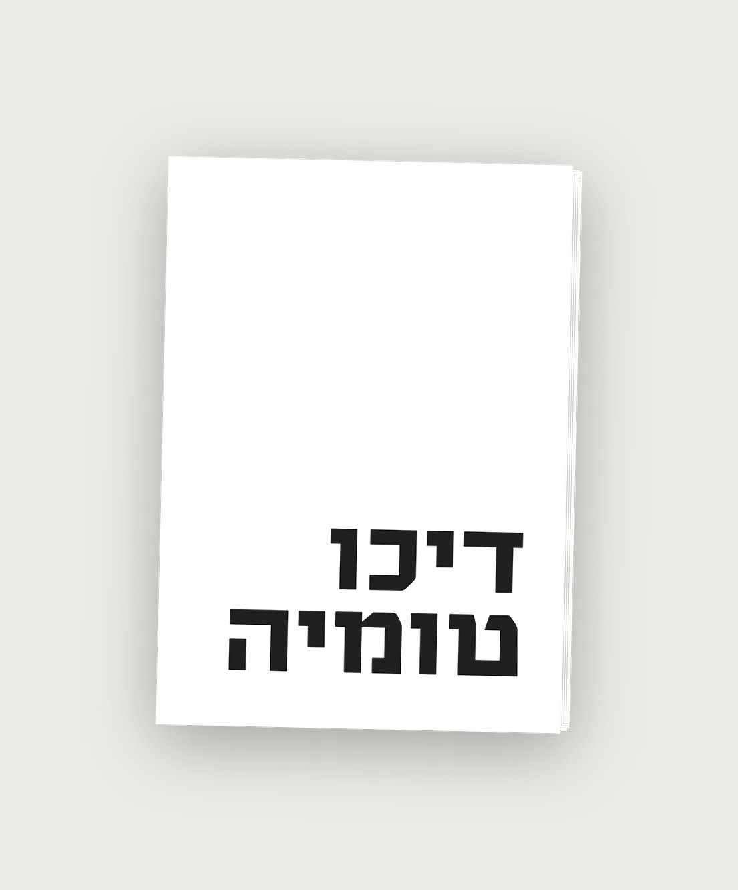
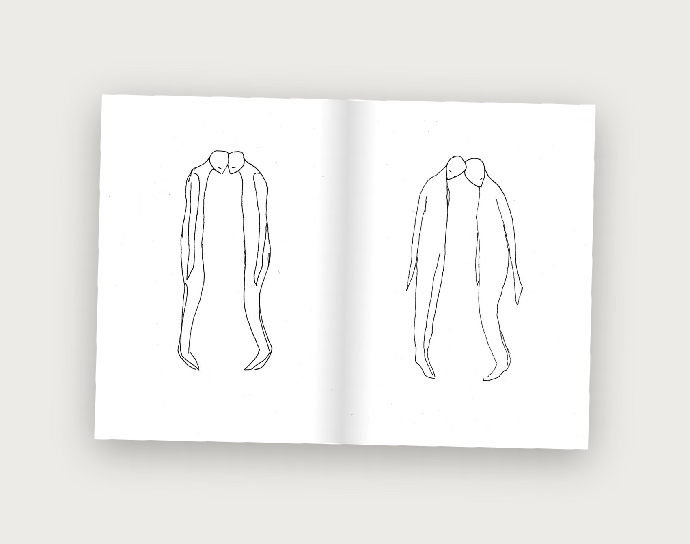
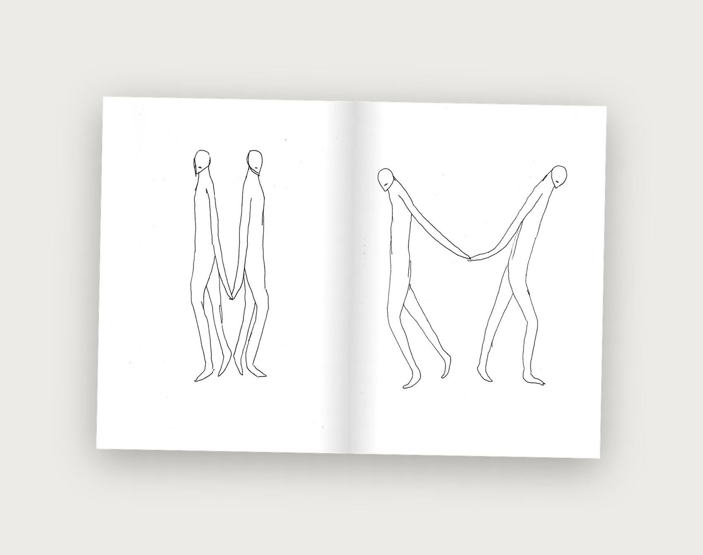
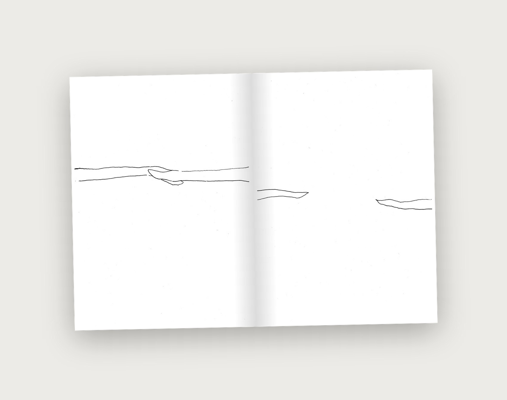

Dichotomy
A short illustrated zine about the pull to divide anything into two clean, opposing halves. Two figures move through the pages - merged, walking together, holding hands, then slowly coming apart. The drawings argue with the definition on the opening page: the line between the two never quite closes.
Zine & Illustration
Dichotomy (n.): the division of a concept, phenomenon, or group into two separate, opposing parts, presented as a binary distinction - a split that often flattens the real complexity underneath it. The zine opens with that definition, then spends the rest of its pages quietly disagreeing with it in line drawings of two figures who start out indistinguishable from one another and, wordlessly, slowly become two.
This is the latest issue in a series of personal zines I make alongside my client work.



